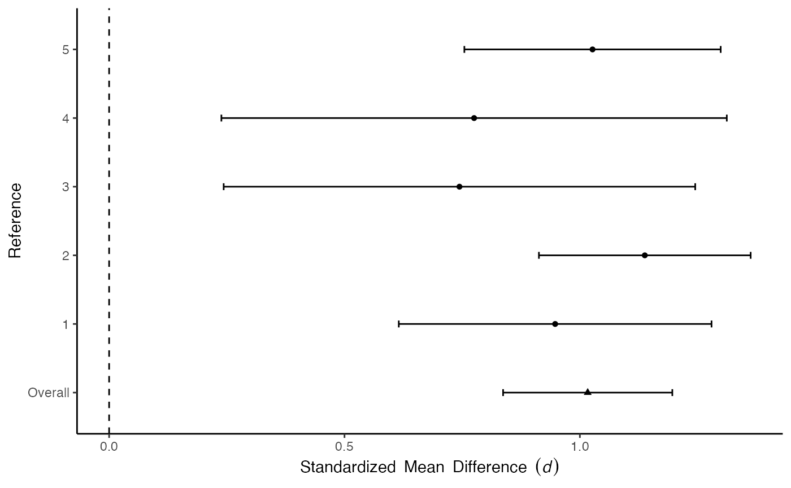
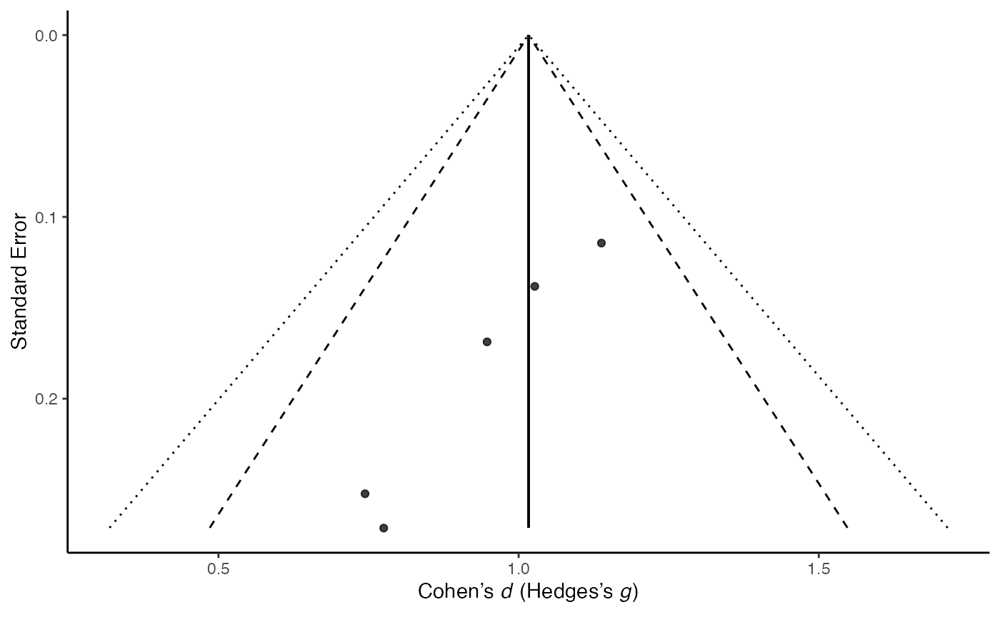
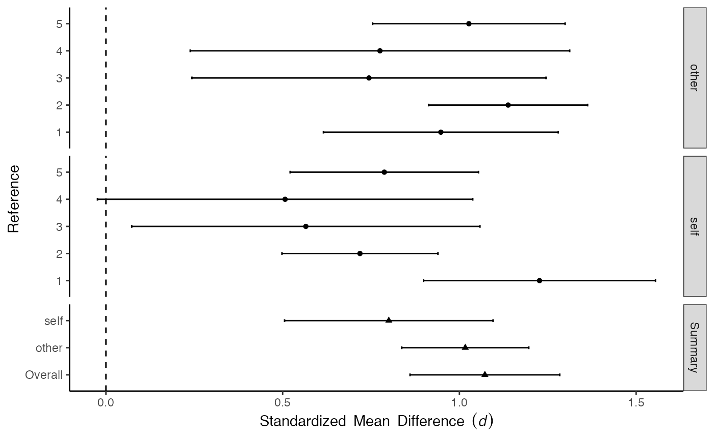
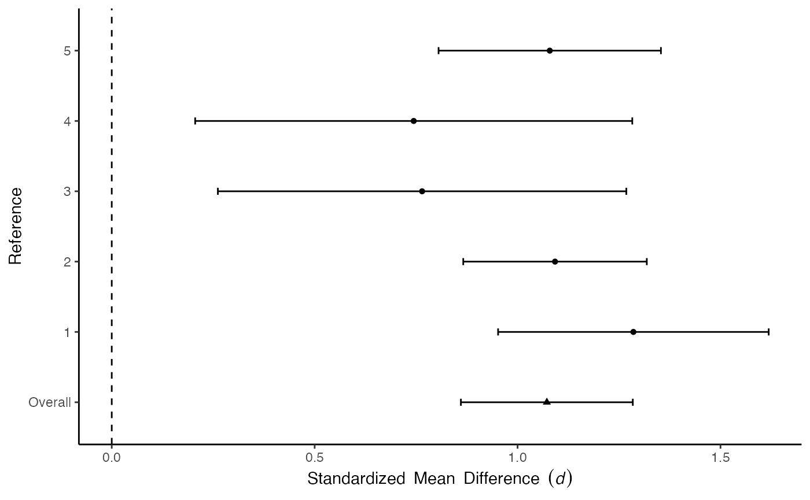
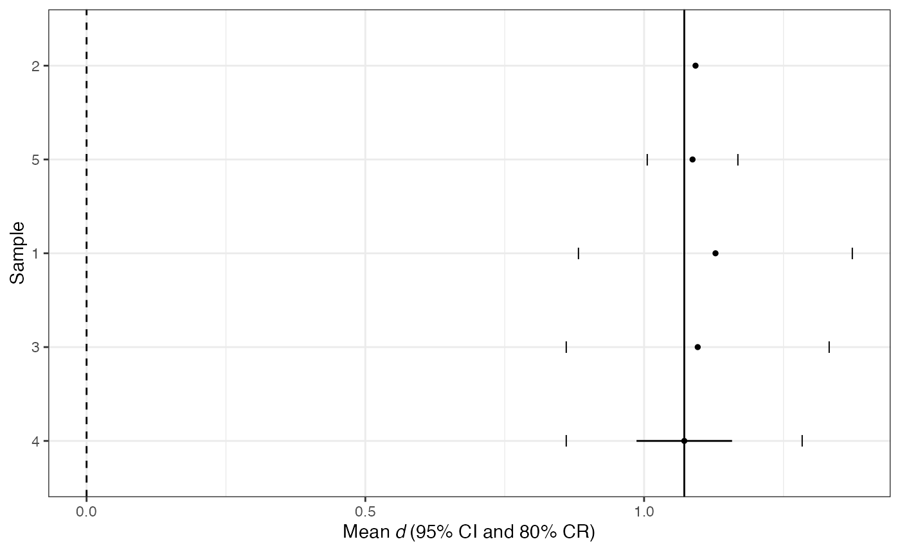
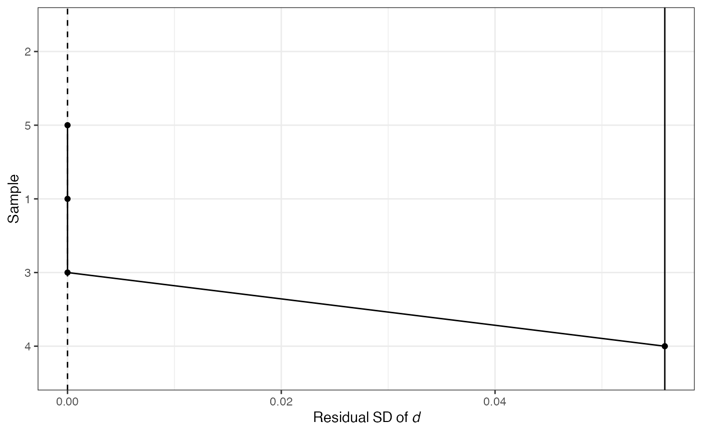

Note: This vignette is a work in progress.
This vignette will walk you through estimating meta-analyses of standardized mean differences (i.e., Cohen’s d or Hedges’s g) between groups on multiple constructs. For more vignettes, see the psychmeta overview.
To begin, you will need your meta-analytic data sheet for analysis. We recommend the rio package for importing data to R. For an introduction to rio, see vignette("rio", "rio").
psychmeta assumes that your data are in “long” format, with each row corresponding to one effect size. For example, this is the format used in this data frame:
coding_sheet <-
tibble::tribble(
~sample_id, ~construct, ~n1, ~n2, ~d, ~ryyi, ~rater,
1L, "X", 237L, 45L, 1.23, 0.83, "self",
1L, "X", 237L, 45L, 0.95, 0.76, "other",
1L, "Y", 237L, 45L, 0.8, 0.7, "self",
1L, "Y", 237L, 45L, 1.03, 0.64, "other",
2L, "X", 122L, 282L, 0.72, 0.76, "self",
2L, "X", 122L, 282L, 1.14, 0.78, "other",
2L, "Y", 122L, 282L, 1.16, 0.78, "self",
2L, "Y", 122L, 282L, 0.83, 0.76, "other",
3L, "X", 74L, 23L, 0.57, 0.76, "self",
3L, "X", 74L, 23L, 0.75, 0.73, "other",
3L, "Y", 74L, 23L, 0.48, 0.68, "self",
3L, "Y", 74L, 23L, 0.35, 0.73, "other",
4L, "X", 17L, 107L, 0.51, 0.7, "self",
4L, "X", 17L, 107L, 0.78, 0.79, "other",
4L, "Y", 17L, 107L, 0.66, 0.7, "self",
4L, "Y", 17L, 107L, 0.99, 0.8, "other",
5L, "X", 100L, 146L, 0.79, 0.73, "self",
5L, "X", 100L, 146L, 1.03, 0.78, "other",
5L, "Y", 100L, 146L, 0.79, 0.72, "self",
5L, "Y", 100L, 146L, 0.45, 0.69, "other"
)
knitr::kable(coding_sheet)| sample_id | construct | n1 | n2 | d | ryyi | rater |
|---|---|---|---|---|---|---|
| 1 | X | 237 | 45 | 1.23 | 0.83 | self |
| 1 | X | 237 | 45 | 0.95 | 0.76 | other |
| 1 | Y | 237 | 45 | 0.80 | 0.70 | self |
| 1 | Y | 237 | 45 | 1.03 | 0.64 | other |
| 2 | X | 122 | 282 | 0.72 | 0.76 | self |
| 2 | X | 122 | 282 | 1.14 | 0.78 | other |
| 2 | Y | 122 | 282 | 1.16 | 0.78 | self |
| 2 | Y | 122 | 282 | 0.83 | 0.76 | other |
| 3 | X | 74 | 23 | 0.57 | 0.76 | self |
| 3 | X | 74 | 23 | 0.75 | 0.73 | other |
| 3 | Y | 74 | 23 | 0.48 | 0.68 | self |
| 3 | Y | 74 | 23 | 0.35 | 0.73 | other |
| 4 | X | 17 | 107 | 0.51 | 0.70 | self |
| 4 | X | 17 | 107 | 0.78 | 0.79 | other |
| 4 | Y | 17 | 107 | 0.66 | 0.70 | self |
| 4 | Y | 17 | 107 | 0.99 | 0.80 | other |
| 5 | X | 100 | 146 | 0.79 | 0.73 | self |
| 5 | X | 100 | 146 | 1.03 | 0.78 | other |
| 5 | Y | 100 | 146 | 0.79 | 0.72 | self |
| 5 | Y | 100 | 146 | 0.45 | 0.69 | other |
In this table, - sample_id contains labels indicating the sample each effect size is drawn from; - construct indicates the variable/construct being compared in the effect size; - n1 and n2 are the sample sizes for each group for the effect size; - d is the Cohen’s d effect size; - Values should be entered as Cohen’s d, not Hedges’s g (i.e., not correcting for small-sample bias). Small-sample bias will be automatically corrected in the ma_d() function. - ryyi is the sample reliability values for the measures of the construct variables; - rater here is a categorical moderator indicating whether the ratings were provided by the person themselves or another person.
You can see this data set includes group comparisons for two variables: X and Y, and that each sample contributes several effect sizes, one for each construct-rater combination.
If your data are in a different format, you can use the reshape_wide2long() function to reshape it. See the import_organize vignette for details.
Let’s use the data frame above, called coding_sheet.
The primary function to conduct meta-analyses of d values is ma_d(). To conduct barebones meta-analyses, run:
ma_res <- ma_d(d = d,
n1 = n1,
n2 = n2,
construct_y = construct,
sample_id = sample_id,
moderators = rater,
data = coding_sheet
)
#> **** Running ma_d: Meta-analysis of d values ****data is your data frame.d, n1, n2, sample_id, and moderators are the names of the columns in your data frame that contain the appropriate values.
d is the Cohen’s d effect sizes;
ma_d() function.n1 and n2 are the group sample sizes;
n2 is NA, then n1 as the total sample size across both groups.construct_y are the labels for the variables/constructs being compared;sample_id is the sample identification labels;moderators is a vector of moderator variable names for the meta-analyses."d", "n1") or without (e.g., d, n1).group_id or group1/group2 columns:
group_id gives labels for the comparison (e.g., “Treatment1-Control”)group1 and group2 give labels for the two groups in separate columns (e.g., “Treatment1” in group1 and “Control” in group2).To conduct a barebones meta-analysis, at minimum, n1 and d are needed.
By default, Cohen’s d values are weighted by effective sample size. Effective sample size is computed as:
\[N_{effective} = 4 \times \frac{n_{1} \times n_{2}}{n_{1} + n_{2}}\]
This is similiar to weighting by total sample size, but account for increased uncertainty when group sizes are unequal (see Bakbergenuly et al., 2019).
You can specify alternative weights using the wt_type argument.
Random-effects variance (τ2 or SDres2) is estimated using the Hunter-Schmidt estimator, computed using the unbiased sample variance estimator (i.e., dividing by \(k-1\) rather than \(k\)). To use the maximum-likelihood estimator instead, specify var_unbiased = FALSE.
Barebones results are corrected for the small-sample bias in Cohen’s d (i.e., results are Hedges’s g values). To disable this correction, specify correct_bias = FALSE.
By default, confidence and credibility intervals are constructed using a t distribution with \(k-1\) degrees of freedom. To use a normal distribution instead, specify, conf_method = "norm" and cred_method = "norm". To customize the coverage levels for these intervals, use the conf_level and cred_level arguments.
A psychmeta meta-analsyis object is a data frame, with each row being a meta-analysis or subanalysis and each column containing information about or results from that analysis. For example, the results of the analysis above look like this:
ma_res
#> Overview tibble of psychmeta meta-analysis of d values
#> ----------------------------------------------------------------------
#> # A tibble: 6 x 8
#> analysis_id pair_id group_contrast construct_y analysis_type rater meta_tables escalc
#> * <int> <int> <fct> <fct> <chr> <chr> <named list> <named list>
#> 1 1 1 group1-group2 X Overall All Levels <named list [3]> <named list [4]>
#> 2 2 1 group1-group2 X Simple Moderator other <named list [3]> <named list [4]>
#> 3 3 1 group1-group2 X Simple Moderator self <named list [3]> <named list [4]>
#> 4 4 2 group1-group2 Y Overall All Levels <named list [3]> <named list [4]>
#> 5 5 2 group1-group2 Y Simple Moderator other <named list [3]> <named list [4]>
#> 6 6 2 group1-group2 Y Simple Moderator self <named list [3]> <named list [4]>
#>
#> To extract results, try summary() or the get_stuff functions (run ?get_stuff for help).Each row corresponds to a different pair of variables/constructs (X-Y; X-Z; Y-Z) and level of the moderator variable (overall/all levels pooled together; moderator = 1; moderator = 2).
analysis_id is a numeric label for each analysis;
pair_id is a numeric label for each combination of group comparison and variable/construct (Treatment1-Control differences on X; Treatment2-Control differences on Y);
group_contrast indicates the pair of groups being compared;
construct_y indicates which variables/constructs are being compared.
analysis_type indicates the type of analysis.
“Overall” means an overall meta-analysis, pooling across all moderator levels.
“Simple Moderator” means a subgroup moderator analysis of only studies with the specified levels of the moderator variable(s) in the next column(s).
(See below for how to conduct meta-analyses with multiple moderator variables or with continuous moderators)
meta_tables contains the principal meta-analysis results tables.
escalc contains tables of effect sizes, sampling error variances, weights, residuals, and other data. These tables can be used for follow-up analyses or with the metafor package for additional meta-analysis techniques.
To view meta-anlaysis results tables, use the summary() function:
summary(ma_res)
#> Bare-bones meta-analysis results
#> ----------------------------------------------------------------------
#> analysis_id pair_id group_contrast construct_y analysis_type rater k N mean_d sd_d se_d sd_res CI_LL_95 CI_UL_95 CR_LL_80 CR_UL_80
#> 1 1 1 group1-group2 X Overall All Levels 5 1153 1.072 0.171 0.0763 0.0559 0.860 1.28 0.986 1.16
#> 2 2 1 group1-group2 X Simple Moderator other 5 1153 1.017 0.145 0.0647 0.0000 0.837 1.20 1.017 1.02
#> 3 3 1 group1-group2 X Simple Moderator self 5 1153 0.800 0.238 0.1062 0.1775 0.505 1.10 0.528 1.07
#> 4 4 2 group1-group2 Y Overall All Levels 5 1153 0.960 0.266 0.1190 0.2128 0.630 1.29 0.634 1.29
#> 5 5 2 group1-group2 Y Simple Moderator other 5 1153 0.730 0.269 0.1201 0.2178 0.396 1.06 0.396 1.06
#> 6 6 2 group1-group2 Y Simple Moderator self 5 1153 0.902 0.251 0.1123 0.1945 0.590 1.21 0.604 1.20
#>
#>
#> Information available in the meta-analysis object includes:
#> - meta_tables [ access using get_metatab() ]
#> - escalc [ access using get_escalc() ]In this table,
analysis_id, pair_id, group_contrast, construct_y, and the moderator columns are defined as above.k is the number of effect sizes contributing to each meta-analysis.N is the total sample size contributing to each meta-analysis.mean_d is the weighted mean Cohen’s d (Hedges’s g) value.sd_d is the weighted observed standard deviation of d (g) values.se_d is the standard error of mean_d.sd_res is the estimated random-effects standard deviation (residual SD of d [g] after accounting for sampling error).CI_LL_95 and CI_UL_95 are the upper and lower bounds of the confidence interval for mean_d; the number indicates the coverage level (default: 95%).CR_LL_80 and CR_UL_80 are the upper and lower bounds of the credibility interval for the estimated population distribution; the number indicates the coverage level (default: 80%).To view additional results, such as observed variance (var_d) or standard deviation of sampling errors (sd_e), use the get_metatab() function and select the appropriate columns:
names(get_metatab(ma_res))
#> [1] "analysis_id" "pair_id" "group_contrast" "construct_y" "analysis_type" "rater" "k" "N" "mean_d"
#> [10] "var_d" "var_e" "var_res" "sd_d" "se_d" "sd_e" "sd_res" "CI_LL_95" "CI_UL_95"
#> [19] "CR_LL_80" "CR_UL_80"
get_metatab(ma_res)$var_r
#> Warning: Unknown or uninitialised column: `var_r`.
#> NULLTo view all columns of this table, convert it to a data.frame or tibble:
dplyr::as_tibble(get_metatab(ma_res))
#> # A tibble: 6 x 20
#> analysis_id pair_id group_contrast construct_y analysis_type rater k N mean_d var_d var_e var_res sd_d se_d sd_e sd_res CI_LL_95 CI_UL_95
#> <int> <int> <fct> <fct> <chr> <chr> <dbl> <dbl> <dbl> <dbl> <dbl> <dbl> <dbl> <dbl> <dbl> <dbl> <dbl> <dbl>
#> 1 1 1 group1-group2 X Overall All Lev… 5 1153 1.07 0.0291 0.0260 0.00312 0.171 0.0763 0.161 0.0559 0.860 1.28
#> 2 2 1 group1-group2 X Simple Moderator other 5 1153 1.02 0.0210 0.0257 -0.00478 0.145 0.0647 0.160 0 0.837 1.20
#> 3 3 1 group1-group2 X Simple Moderator self 5 1153 0.800 0.0564 0.0249 0.0315 0.238 0.106 0.158 0.178 0.505 1.10
#> 4 4 2 group1-group2 Y Overall All Lev… 5 1153 0.960 0.0708 0.0255 0.0453 0.266 0.119 0.160 0.213 0.630 1.29
#> 5 5 2 group1-group2 Y Simple Moderator other 5 1153 0.730 0.0721 0.0247 0.0475 0.269 0.120 0.157 0.218 0.396 1.06
#> 6 6 2 group1-group2 Y Simple Moderator self 5 1153 0.902 0.0631 0.0253 0.0378 0.251 0.112 0.159 0.194 0.590 1.21
#> # … with 2 more variables: CR_LL_80 <dbl>, CR_UL_80 <dbl>
as.data.frame(get_metatab(ma_res))
#> analysis_id pair_id group_contrast construct_y analysis_type rater k N mean_d var_d var_e var_res sd_d se_d sd_e
#> 1 1 1 group1-group2 X Overall All Levels 5 1153 1.0721151 0.02909748 0.02597452 0.003122963 0.1705798 0.07628563 0.1611661
#> 2 2 1 group1-group2 X Simple Moderator other 5 1153 1.0166112 0.02095192 0.02573267 -0.004780747 0.1447478 0.06473317 0.1604140
#> 3 3 1 group1-group2 X Simple Moderator self 5 1153 0.8002913 0.05641961 0.02491273 0.031506882 0.2375281 0.10622581 0.1578377
#> 4 4 2 group1-group2 Y Overall All Levels 5 1153 0.9601476 0.07078543 0.02549982 0.045285614 0.2660553 0.11898355 0.1596866
#> 5 5 2 group1-group2 Y Simple Moderator other 5 1153 0.7297105 0.07214454 0.02468744 0.047457098 0.2685974 0.12012039 0.1571224
#> 6 6 2 group1-group2 Y Simple Moderator self 5 1153 0.9019087 0.06309335 0.02527358 0.037819767 0.2511839 0.11233285 0.1589767
#> sd_res CI_LL_95 CI_UL_95 CR_LL_80 CR_UL_80
#> 1 0.05588348 0.8603122 1.283918 0.9864342 1.157796
#> 2 0.00000000 0.8368831 1.196339 1.0166112 1.016611
#> 3 0.17750178 0.5053612 1.095221 0.5281444 1.072438
#> 4 0.21280417 0.6297963 1.290499 0.6338749 1.286420
#> 5 0.21784650 0.3962028 1.063218 0.3957069 1.063714
#> 6 0.19447305 0.5900227 1.213795 0.6037414 1.200076Results for subgroup analyses for different levels of categorical moderators are shown in the rows of the meta-analysis results table. To estimate confidence intervals for differences between levels or an omnibus ANOVA statistic, use the anova() function:
anova(ma_res)
#> Warning: The `x` argument of `as_tibble.matrix()` must have unique column names if `.name_repair` is omitted as of tibble 2.0.0.
#> Using compatibility `.name_repair`.
#> pair_id group_contrast construct_y moderator F value df_num df_denom level_1 level_2 mean_1 mean_2 diff CI_LL_95 CI_UL_95
#> 1 1 group1-group2 X rater 3.02 1 6.61 other self 1.02 0.800 0.216 -0.0705 0.503
#> 2 2 group1-group2 Y rater 1.10 1 7.96 other self 0.73 0.902 -0.172 -0.5514 0.207To output the main meta-analysis results table to RMarkdown, Word, HTML, PDF, or other formats, use the metabulate() function. For example, to output the above results to a Word document, run:
metabulate(ma_res, file = "meta-analysis_results.docx", output_format = "word")You can add plots for each meta-analysis in ma_res using the plot_forest() and plot_funnel() functions:
ma_res <- plot_funnel(ma_res)
#> Funnel plots have been added to 'ma_obj' - use get_plots() to retrieve them.
ma_res <- plot_forest(ma_res)
#> Forest plots have been added to 'ma_obj' - use get_plots() to retrieve them.You can view these plots using the get_plots() function. This will return a list of all of the plots in this results. Specify which meta-analysis you want to view plots for by passing its analysis_id to [[:
get_plots(ma_res)[["forest"]][[2]]
#> $moderated
#> NULL
#>
#> $unmoderated
#> $unmoderated$barebones
#>
#> $unmoderated$individual_correction
#> NULL
get_plots(ma_res)[["funnel"]][[2]]
#> $barebones
#>
#> $individual_correction
#> list()
#>
#> $artifact_distribution
#> list()
For forest plots, if you select an “Overall” meta-analysis, it will include plots faceted by moderator levels ("moderated") and not ("unmoderated"):
get_plots(ma_res)[["forest"]][[1]][["moderated"]][["barebones"]]
get_plots(ma_res)[["forest"]][[1]][["unmoderated"]][["barebones"]]
psychmeta reports the random-effects standard deviaton (τ or SD_res_) and credibility intervals (mean_r ± crit × SDres) in the main meta-analaysis results tables. To view confidence intervals for SD_res_ or additional heterogeneity statistics, use the heterogeneity() function:
ma_res <- heterogeneity(ma_res)
#> Warning in sqrt(tau_squared): NaNs produced
#> Warning in sqrt(tau_squared): NaNs produced
#> Heterogeneity analyses have been added to 'ma_obj' - use get_heterogeneity() to retrieve them.
get_heterogeneity(ma_res)[[1]][["barebones"]]
#>
#> Heterogeneity results for d
#> ---------------------------
#>
#> Accounted for a total of 89.267% of variance
#>
#> Correlation between d values and artifactual perturbations: 0.945
#>
#> The reliability of observed effect sizes is: 0.107
#>
#>
#> Random effects variance estimates
#> ---------------------------------
#> Hunter-Schmidt method:
#> sd_res (tau): 0.056, SE = 0.147, 95% CI = [0.000, 0.463]
#> var_res (tau^2): 0.003, SE = 0.016, 95% CI = [0.000, 0.214]
#>
#> Q statistic: 4.481 (df = 4, p = 0.345)
#> H: 1.058 H^2: 1.120 I^2: 10.733
#>
#> DerSimonian-Laird method:
#> sd_res (tau): 0.063
#> var_res (tau^2): 0.004
#>
#> Q statistic: 4.543
#> H: 1.066 H^2: 1.136 I^2: 11.961
#>
#> Outlier-robust method (absolute deviation from mean):
#> sd_res (tau_r): 0.076
#> var_res (tau_r^2): 0.006
#>
#> Q_r statistic: 3.904
#> H_r: 1.094 H_r^2: 1.197 I_r^2: 0.165
#>
#> Outlier-robust method (absolute deviation from median):
#> sd_res (tau_m): 0.000
#> var_res (tau_m^2): 0.000
#>
#> Q_m statistic: 3.806
#> H_m: 0.954 H_m^2: 0.910 I_m^2: -0.099psychmeta supports cumulative meta-analysis for publication/small-sample bias detection, leave-1-out sensitivity analyses, and bootstrap confidence intervals using the sensitivity function:
ma_res <- sensitivity(ma_res)
#> **** Computing sensitivity analyses ****
#> Bootstrapped meta-analyses have been added to 'ma_obj' - use get_bootstrap() to retrieve them.
#> leave-1-out meta-analyses have been added to 'ma_obj' - use get_leave1out() to retrieve them.
#> Cumulative meta-analyses have been added to 'ma_obj' - use get_cumulative() to retrieve them.
get_cumulative(ma_res)[[1]][["barebones"]]
#> Cumulative meta-analysis results
#> ----------------------------------------
#> study_added k N mean_d var_d var_e var_res sd_d se_d sd_e sd_res CI_LL_95 CI_UL_95 CR_LL_80 CR_UL_80
#> 1 2 1 404 1.09 NA 0.0133 NA NA 0.11526 0.115 NA 0.866 1.32 NA NA
#> 2 5 2 650 1.09 8.17e-05 0.0158 -0.015710 0.00904 0.00639 0.126 0.0000 1.006 1.17 1.087 1.09
#> 3 1 3 932 1.13 9.76e-03 0.0186 -0.008865 0.09879 0.05704 0.136 0.0000 0.883 1.37 1.128 1.13
#> 4 3 4 1029 1.10 2.20e-02 0.0226 -0.000538 0.14837 0.07418 0.150 0.0000 0.860 1.33 1.096 1.10
#> 5 4 5 1153 1.07 2.91e-02 0.0260 0.003123 0.17058 0.07629 0.161 0.0559 0.860 1.28 0.986 1.16
#>
#> See the 'plots' list for data visualizations.
get_cumulative(ma_res)[[1]][["barebones"]][["plots"]]
#> $mean_plot
#> Warning: Removed 1 rows containing missing values (geom_segment).
#> Warning: Removed 1 rows containing missing values (geom_point).
#> Warning: Removed 1 rows containing missing values (geom_point).
#>
#> $sd_plot
#> Warning: Removed 1 rows containing missing values (geom_point).
#> Warning: Removed 1 row(s) containing missing values (geom_path).
get_bootstrap(ma_res)[[1]][["barebones"]]
#> NULL